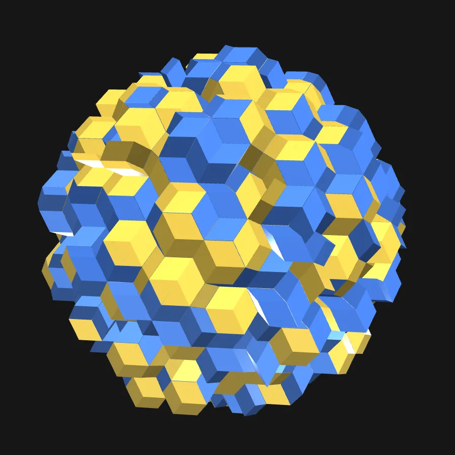

Viewer2種類の黄金菱面体が織りなす三次元準結晶の構造を、回転・分解・断面表示で観察するアプリです。高次元格子に基づく生成と、位相の変化に伴うブロック配置の変化を体験できます。
A 3D quasicrystal of two golden rhombohedra — rotate, explode and slice it, and watch the blocks rearrange as the phase shifts.
アプリを開くいずれも2026年2月24日時点の資料です。現在の版では、デモモードはタイトル文字をもう一度タップすると終了します。
PC・タブレット・スマートフォンのブラウザで動作します（WebGL を使用）。Radius を大きくすると計算に時間がかかります。
制作：宮本（2026年2月、生成AIを併用して制作）